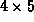

Data Structures and Algorithms
with Object-Oriented Design Patterns in C++
Data Structures and Algorithms
with Object-Oriented Design Patterns in C++
When accessing the elements of a multi-dimensional array,
programmers usually prefer to use the C++ array subscripting operator
rather than call a member function explicitly.
This is because it is much more convenient to write a[i][j]
than to write a.Select(i,j).
However, C++ does not directly support the overloading of
multi-dimensional array subscripting.
E.g., an experienced Fortran programmer would expect to be able to write
a[i,j] and to overload operator[](int,int).
Alas, neither of these things is valid in C++.
The solution to this problem is to do the subscripting in two steps. Consider the reference a[i][j]. In C++ this is equivalent to
a.operator[] (i).operator[] (j)In effect, the first subscripting operator selects the
Program  gives a framework
for implementing the two-step process in C++.
Two object classes are declared--Array2D<T>
and the nested class Row.
The latter class
is used to represent a reference to a particular row of a given
two-dimensional array.
gives a framework
for implementing the two-step process in C++.
Two object classes are declared--Array2D<T>
and the nested class Row.
The latter class
is used to represent a reference to a particular row of a given
two-dimensional array.
In Program we see that operator[]
for Array2D<T> objects returns an object of type Array2D<T>::Row.
The purpose of a Row object is to ``remember''
both the array and the row of that array that is being accessed--its data members are a reference to the accessed array,
and the row number.
There is also a subscripting operator defined for Row class objects. This one uses the remembered row number together with the given column number to call the Select function on the appropriate array.
The definition of the Array2D<T>
subscripting member function, operator[],
is given in Program .
This function simply constructs an instance of the Array2D<T>::Row class.
Clearly, the running time of this function is O(1).
Given the Array2D<T> class we are able to write code such as the following:
Array2D<int> a (4, 5);
for (int i = 0; i < 4; ++i)
for (int j = 0; j < 5; ++j)
a[i][j] = 0;
which declares a  array of integers,
and initializes all of the elements with the value zero.
 Copyright © 1997 by Bruno R. Preiss, P.Eng. All rights reserved.
Copyright © 1997 by Bruno R. Preiss, P.Eng. All rights reserved.